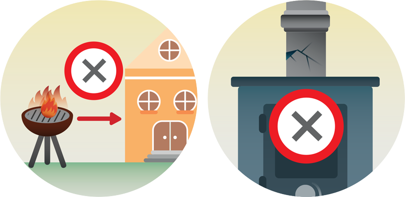

열손실을 최소화하기 위해 출입구를 막고 외부 공기의 유입을 차단했을 때 신경 쓸 점은 주기적인 환기입니다.
좁은 공간에 모여 지내면 사람이 호흡으로 내뿜는 이산화탄소가 증가하고 산소가 부족해지기 마련입니다.
LPG 가스, 휴대용 부탄 가스레인지, 캠핑용 버너 등을 이용해 난방이나 조리를 할 때는 일산화탄소가 실내에 고이지 않도록 반드시 환기를 해야 합니다.
전기와 가스가 끊겨 난방이 불가능할 때, 아무리 추워도 화로나 모닥불을 급조해 실내에서 불을 피우면 안됩니다. 화재는 물론 연기에 질식할 위험이 많고, 무엇보다 일산화탄소에 중독되기 쉽습니다.

마당의 바비큐 그릴이나 테라스용 난로를 실내로 들이는 일은 절대로 해서는 안됩니다. 일산화탄소는 눈에 보이지 않으며 실외용 난로는 엄청난 양의 일산화탄소를 배출합니다.
굴뚝이 막힌 벽난로, 연통이 갈라지거나 벌어진 실내용 난로도 사용할 수 없습니다. 장작, 석유, 석탄을 떼는 난로는 반드시 연기 배출구에 막힌 곳이나 연결 부위에 틈새가 없는지 미리 확인해야 하며, 환기에 더욱 신경 써야 합니다.